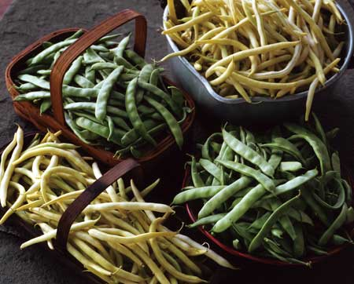

Freshly harvested, garden-grown green beans, or those purchased atyour local farmers market, are wonderfully different from thoseyou'd find at the supermarket ? fresh beans are subtly sweet with acrisp, yet tender, texture.
Green beans come in many shades of green, as well as yellow, purpleand red. All are called 'green' beans because they are picked andeaten at an immature stage, before the seeds have ripenedcompletely. Nutritionally, green beans are a good source of fiber,as well as vitamins A and K; the latter improves blood clotting andhelps build strong bones.
Easy-to-grow green beans ask only for abundant sun, warm soil andample moisture to produce well. And while you might think it's toolate to grow your own crop this year, you can plant fast-growingbeans eight to 10 weeks before your first fall frost. Mostgardeners begin by choosing between compact bush-type varieties andpole beans, which grow long vines that require a trellis. As ageneral rule, a good bush variety will produce 5 to 6 pounds ofbeans per 10 foot row, but pole beans are more space-efficient,producing 8 to 9 pounds in the same amount of space. Pole typestend to produce beans for a longer period of time, too.
Round-podded Beans
Supermarket green beans, as well as most canned green beans, haveround, fleshy pods with only the slightest hints of seeds inside.As long as you pick the beans when they're young, most of thesemodern bean varieties also are stringless. Exemplary stringlessbush varieties include green-podded ?Blue Lake,' ?Maxibel' and?Provider,' as well as ?Golden Wax' and many other yellow waxbeans, plus ?Royal Burgundy,' which bears purple pods.
If you want a round-podded pole bean, ?Kentucky Blue' and ?Fortex'are good bets. These and other round-podded beans are the besttypes for eating raw, or you can blanch them by plunging the beansinto boiling water for 30 seconds, then cooling them in ice water ?a process that stabilizes their vitamins and color.
Flat-podded Beans
The most famous of all flat-podded beans is ?Romano,' an Italianheirloom pole bean that has now been bred into bush forms including?Roma II' and ?Gina' (green pods) and ?Romano Gold' (yellow pods).The majority of flat-podded green beans are pole beans, includingheavy-bearing ?Kwintus' and many others. Seed catalogs oftendescribe these varieties as stringless, but most of them do developstrings as the pods begin to mature. Their flavor and texturechanges too ? often for the better ? so these beans can be taken intwo different directions in the kitchen. You can pick very youngpods and handle them like round-podded beans, or let them hang onthe vine until the seeds begin to bump up.
Early American Beans
Columbus and other early explorers found Native Americans plantingbeans in their corn gardens (where the corn stalks acted as naturaltrellises), and many older, shade-tolerant, long-vining beanvarieties are still available from companies that sell heirloomseeds. These early American beans are picked when the pods are fullwith immature beans. Stringing the beans is a mandatory step intheir preparation.
SEED SOURCES:
Park Seed Co.
1 Parkton Ave.
Greenwood, SC 29647
(800) 213-0076
www.parkseed.com
Southern Exposure Seed Exchange
P.O. Box 460
Mineral, VA 23117
(540) 894-9480
www.southernexposure.com
Sustainable Mountain Agriculture Center
1033 Pilot Knob Cemetery Road
Berea, KY 40403
(859) 986-3204
www.heirlooms.org
Territorial Seed Co.
P.O. Box 158
Cottage Grove, OR 97424
(800) 626-0866
www.territorial-seed.com
Vermont Bean Seed Co.
334 West Stroud St.
Randolph, WI 53956
(800) 349-1071
www.vermontbean.com
Victory Seeds
P.O. Box 192
Molalla, OR 97038
(503) 829-3126
www.victoryseeds.com
|
 |
|
|